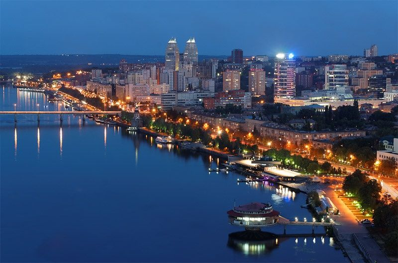

Історія набережної
Набережна Дніпра – візитна картка міста. Це улюблене місце для прогулянок місцевих мешканців та гостей Дніпра. Ця широка набережна, що розтягнулася на тридцять кілометрів по річці, із зеленим бульваром посередині, є однією з найвизначніших пам'яток міста. Її будівництво розпочалося у п'ятдесятих роках минулого століття, насамперед прибережна частина Дніпра не була облаштована.  У 2005–2007 роках набережну Дніпра у місті Дніпро було повністю реконструйовано. Замість старого асфальтового покриття поклали нову тротуарну плитку, відремонтували проїжджу частину та встановили нове сучасне освітлення. Прогулюючись набережною, ви обов'язково звернете увагу на величезну кількість квітів та зелених насаджень. На території в дві з половиною тисячі квадратних метрів посаджено понад сім тисяч кущів хризантем восьми сортів, сорок видів дерев, серед яких досить рідкісні для цього регіону кулясті та пірамідальні туї, сосни та ялівець.
Пам'ятки
На набережній Дніпра кожен зможе знайти для себе улюблений куточок. У її центральній частині дві тераси – верхня та нижня пішохідні зони.
Одним із головних об'єктів на оновленій набережній став світломузичний фонтан «Білий Лебідь», встановлений на поверхні річки навпроти готелю «Дніпропетровськ». Завдяки сучасній технології лазерного розпилення створюються як абстрактні композиції, а й конкретні постаті. Фонтан обертається і «махає крилами», а висота струменя води сягає 50 метрів.
Також на набережній можна побачити Сімейну лаву, Лава закоханих та Дерево щастя, виготовлені місцевими ковалями та подаровані мешканцям до Дня міста.


Ви також побачите Дніпропетровський цирк, розташований на вулиці Січеславська Набережна, 33. Він був побудований за проектом Павла Ніринберга та є однією з візитівок міста. Будівля, виготовлена з блискучого металу, оснащена ефектним підсвічуванням, ніби переносить вас у казку.
Правий і лівий береги річки з'єднані п'ятьма мостами, найкрасивіший з них – Мерефо-Херсонський залізничний. Біля Центрального мосту знаходиться встановлена в 2005 році скульптура «Юність Дніпра».

З різних точок набережної чудово проглядається побудований на Монастирському острові храм Святого Миколая. Ніжно-біла церква із золотими куполами одразу ж стала одним із визнаних символів Дніпра.
На набережній розташовані знамениті 28-поверхові вежі-близнюки.
Локація